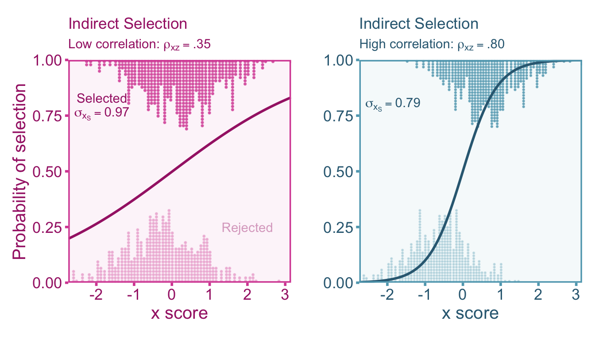
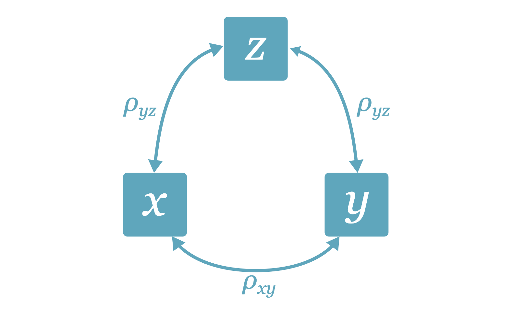
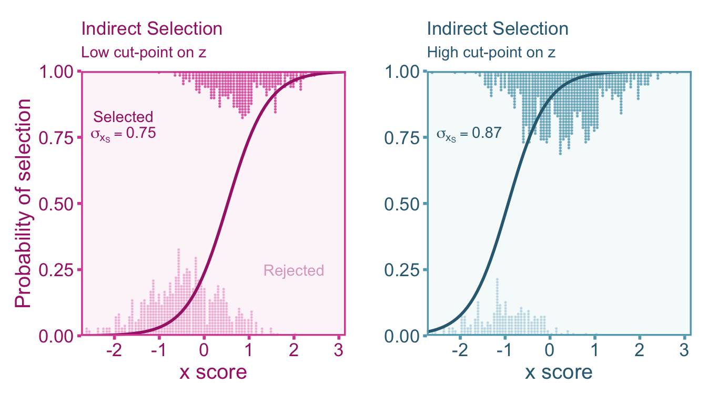
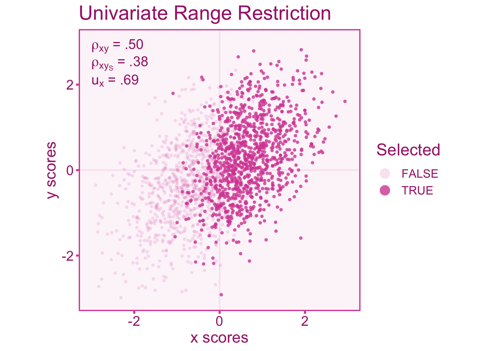
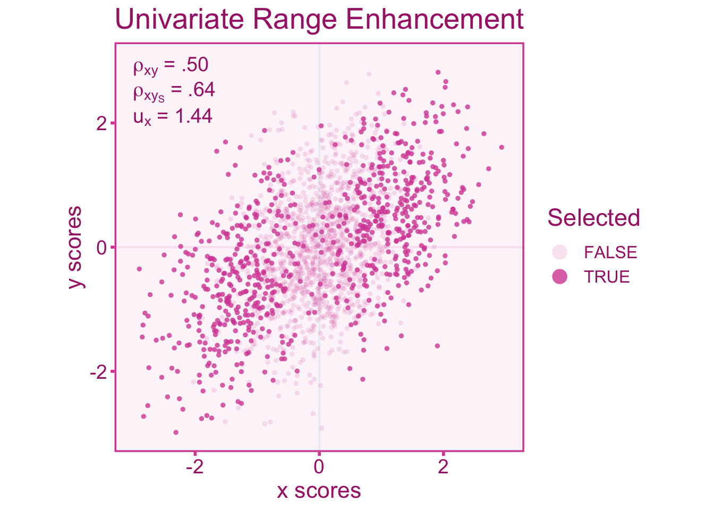
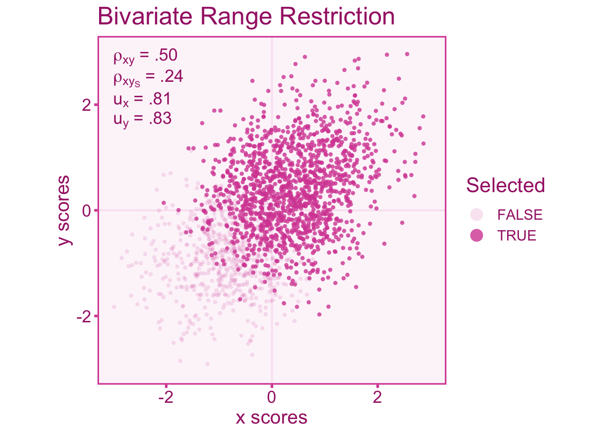
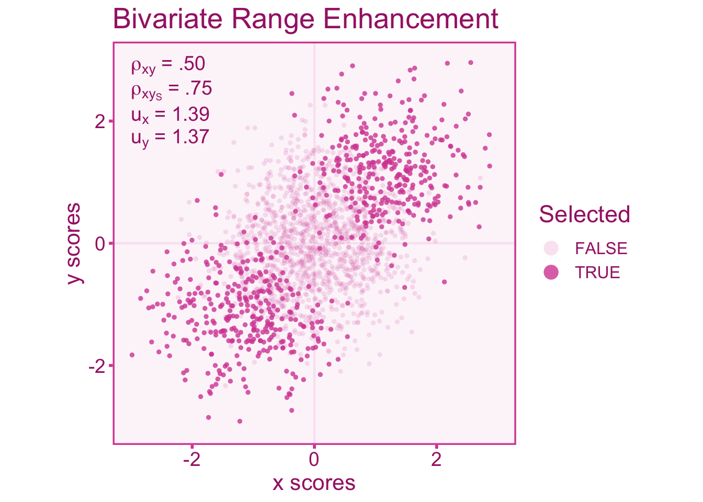

10 Indirect Selection
10.1 Introduction
Indirect range restriction/enhancement occurs when selection of sample participants is based on a variable that is correlated with the variables of interest. If the selector Whereas range enhancement indicates that there is more variation in a sample then there is in the population. Direct range restriction/enhancement (as opposed to indirect range restriction) is when selection into the sample is based on the variable(s) of interest (i.e., the independent and/or dependent variable). This selection into the sample will either restrict or enhance the variation in the variable, thus causing
10.2 An Applied Example of Indirect Range Restriction
Imagine a research team is conducting a study on academic motivation among college students using a survey that includes various questions related to academic engagement, goal orientation, and effort investment. The researchers administer the survey to a large sample of students across different universities. However, during the data cleaning process, the researchers identify a subset of respondents who exhibited signs of inattentiveness and carelessness in their responses. These signs include straight-lining questions (e.g., consistently selecting the same response option without reading the questions) or responding randomly without considering the content of the questions. Recognizing that inattentive or careless responding can distort the measurement of academic motivation, the researchers decide to exclude these individuals from the analysis. The rationale is to ensure that the data collected represents genuine responses and validly measures academic motivation. The unintended consequence of this decision is indirect range restriction. By removing inattentive and careless responders, who likely also have lower academic motivation and engagement, from the dataset, the observed range of academic motivation scores is reduced. The excluded individuals, who may have had lower academic motivation scores, are not accounted for in the analysis, resulting in an underestimation of the variability of academic motivation relative to the population.
10.3 Indexing Range Restriction with the u-ratio
The distribution of scores in the unrestricted pool of individuals will exhibit a greater (or lesser) degree of variability compared to the sample that has been selected into the study. Therefore the standard deviation of scores in the unrestricted population (\(\sigma_x\)) will differ from that of the selected (restricted/enhanced) sample (\(\sigma_{x_{S}}\)). To index the difference between the two standard deviations, we can calculate the \(u\)-ratio Wiernik and Dahlke (2020). The \(u\)-ratio is the ratio between the standard deviations of the selected sample to the unrestricted sample such that,
\[ u_x = \frac{\sigma_{x_S}}{\sigma_x} \]
The \(u\)-ratio in cases of range restriction will exist in the interval (0–1). Conversely, when the \(u\)-ratio is greater than 1 it is indicative of range enhancement. The unrestricted standard deviation is often quite difficult to acquire since we do not usually have access to the unrestricted group. However, the unrestricted standard deviation can be estimated from some reference study that has been conducted on the unrestricted group. This often comes in the form of standardization samples or norm samples (obtained from test manuals) if the unrestricted group is the general population. For example, the distribution full-scale IQ scores derived from the Wechsler Adult Intelligence Test has a standard deviation of 15 in the US population (Wechsler 2008). We can use this estimate as the standard deviation for the unrestricted population. Lets say we select a sample from members of Harvard students, who tend to have higher IQs than the general population (this is due to the fact that selection criterion, such as GPA and SAT scores are positively correlated with IQ). If the standard deviation of IQ in Harvard students is 10, then the \(u\)-ratio would be,
\[ u = \frac{\sigma_{x_S}}{\sigma_x} = \frac{10}{15}= .67 \]
However it is not always the case that an estimate of the unrestricted standard deviation is readily available. Therefore if the reliability coefficient from the unrestricted and selected sample can be used to estimate the \(u\)-ratio,
\[ u_x = \sqrt{\frac{1-r_{xx'}}{1-r_{xx'_S}}} \]
Where \(r_{xx'_S}\) and \(r_{xx'}\) are the reliability estimates within the selected and unrestricted groups respectively. In the context of indirect range restriction, the selection does not occur directly on \(x\) (or \(y\)), instead it occurs on a selector variable, \(z\). Therefore we can see how the \(u\)-ratio of the selector variable (\(u_z\)) relates to the \(u\)-ratio of \(x\),
\[ u_x = \sqrt{\rho_{xz}^2u_z^2 -\rho_{xz}^2 + 1 } \]
The formulation above is also dependent on the correlation between the selector, \(z\), and \(x\). If the correlation between \(z\) and \(x\) is \(\rho_{xz}=0\), then you will notice that \(u_x=u_z\). Notice that a correlation of \(\rho_{xz}=1\) would also simplify to a direct range restriction problem. A correlation of \(\rho_{xz}=0\), would effectively have no selection effect (i.e., restriction nor enhancement) since the equation would simplify to \(u_x=1\).
10.4 Correcting Correlations for Direct Range Restriction
10.4.1 Defining our Estimand
For our study we want to estimate the population correlation of the unrestricted scores of the independent (\(x\)) and dependent variable (\(y\)). We can denote this correlation as \(\rho_{xy}\). The population correlation within the selected sample can be denoted as \(\rho_{xy_S}\). Within a study sample that suffers from indirect selection (and sampling error), the study correlation (\(r_{xy_S}\)) will be biased relative to our estimand, \(\rho_{xy}\). This bias can be denoted by \(a\) such that,
\[ r_{xy} = a \rho_{xy_S} + \varepsilon \]
Therefore an unbiased estimate of the unrestricted population correlation would be
\[ r_c = \frac{ r_{xy_S} }{ a}. \] Note that we may also want to correct for measurement on top of range restriction. In this case, using the true score model for x (\(x=T+e_x\)) and y (\(y = U+e_y\)), we may want to estimate the unrestricted correlation between true scores (\(\rho_{TU}\)). The figure below shows the relationship between three variables: the selector (\(z\)), the independent variable (\(x\)), and the dependent variable (\(y\)). The correlation between \(x\) and \(y\) (\(\rho_{xy}\)) is our estimand (i.e., the quantity we want to estimate), however as we will show, under selection on \(z\), the correlations between the selector and the independent/dependent variable can severely bias the observed correlation.

10.4.2 Artifact Correction for Correlations
The Univariate Case
Range restriction (or enhancement) in either the independent or dependent variable will induce bias into the correlation coefficient. Let us consider a case where we select individuals based on meeting some criterion of some third variable, \(z\). The extent to which selection on \(z\) induces restriction (or enhancement) on \(x\) (or \(y\)) depends on the correlation between \(z\) and \(x\). We can simulate an example where individuals are selected into the sample if they are above the mean of \(z\). Lets see how the selection process affects the distribution of \(x\) when we vary the correlation between \(x\) and \(z\) (\(\rho_{xz}\)).
Notice that the distribution of rejected and accepted participants are more similar within the plot on the left where there is a relatively low correlation between the selector variable and the independent variable. More importantly, when the correlation is lower we see wider distributions (larger standard deviation, \(\sigma_{x_S}\)) than in the selected sample (and rejected), however, when the correlation is higher the standard deviation shrinks accordingly. Not only is the correlation between \(x\) and \(z\) important in the resulting variance of \(x\), but so is where the cut-point, that is the threshold where individuals are selected above (or below). For example, the standard deviation of \(x\) will be smaller when individuals are selected above the 90th percentile of \(z\) than when individuals are selected above the median of \(z\) (i.e., the 50th percentile). We can visualize this phenomenon as well by setting a low cut-point for selection (\(z>-1.0\)) and a high cut-point for selection (\(z>0.5\)). Notice in the figure below that the standard deviation is lower when the cut-point is higher on \(z\).

Now lets consider a study where we want to calculate the unrestricted correlation between an independent variable, \(x\), and a dependent variable, \(y\). However, the sample is selected based on meeting some criterion on a selector, \(z\). Lets look at a diagram looking at the relationship between variables. We can visualize the correlation between independent (\(x\)) and dependent (\(y\)) variables under range restriction by only selecting individuals above some cut off of our selector variable, \(z\). The scores of individuals that have been selected will show less variance than the entire pool of individuals. Specifically, the scenario below shows a \(u\)-ratio of about 0.69 in the independent variable. We see in the figure that the correlation in the restricted scores (\(\rho_{xy_S}\)) is attenuated relative to the unrestricted (true) correlation (\(\rho_{xy}\)).

We can also visualize what happens to the correlation when the range is enhanced. Enhancement can be accomplished by selecting individuals at the ends of the distribution (Taylor and Griess 1976). In the visualization below, we see an opposite effect on the correlation, that is, an over-estimate of the unrestricted correlation rather than an attenuation like we see under range restriction. The scenario below has a \(u\)-ratio of about 1.44 in the independent variable.

It starts to become apparent that if \(u_x>1\) (i.e., \(\sigma_x>\sigma_\mathcal{x_S}\)) the observed correlation over-estimates the true, unrestricted correlation and under-estimates the unrestricted correlation when \(u_x<1\) (i.e., \(\sigma_x<\sigma_\mathcal{x_S}\), Sackett and Yang 2000). A bias correction formula for univariate direct range restriction was first developed by Pearson (1903) and provided more recently by Hunter and Schmidt (1990). To correct for the systematic bias in correlations, we can use the \(u\)-ratio of the independent variable such that,
\[ r_c = \frac{r_{xy_S}}{\sqrt{r_{xy_S}^2 + u_{x}^2 (1- r_{xy_S}^2) }} \tag{10.1}\]
This correction formula is only meant for observed scores only. If one wants to correct for range restriction and measurement error, we need to adjust the \(u\)-ratio for measurement error, as well as adjust the reliability coefficients for range restriction/enhancement. We can incorporate these adjustments into a single correction formula using the equation in table 3 of Wiernik and Dahlke (2020), \[ r_c=\frac{r_{xy_S}}{\sqrt{r_{xy_S}^2 + \frac{u_{x}^2 r_{xx'_S}\left(r_{xx'_S}r_{yy'_S} - r_{xy_S}^2\right) }{1 - u_{x}^2 \left(1-r_{xx'_S}\right)} }} \] Where \(r_{xx'_S}\) and \(r_{yy'_S}\) are the reliabilities within the selected sample. If the reliability coefficients come from the unrestricted population (e.g., from a norm/standardization sample), we can estimate the restricted reliability using the following formulas:
\[ r_{xx'_S} = 1-\frac{1-r_{xx'}}{u_x^2} \tag{10.2}\] \[ r_{yy'_S} = 1-\frac{1-r_{yy'}}{u_y^2} \tag{10.3}\]
Now once the the correlation is corrected the observed sampling variance (\(\sigma_{\varepsilon_o}\)) must also be adjusted as well. To do this, we can simply use the corrected correlation and the observed correlation to adjust the sampling variance:
\[ \sigma^2_{\varepsilon_c} = \sigma^2_{\varepsilon_o}\left(\frac{r_c}{r_{xy_S}}\right)^2. \tag{10.4}\]
The Bivariate Case
Bivariate direct range restriction/enhancement occurs when the selection variable has independent relationships with both the independent and dependent variable. Like we did for the univariate case, let’s visualize the correlation between independent (\(x\)) and dependent (\(y\)) variables under range restriction by only selecting individuals above some cut off point in our selector variable, \(z\). We will fix the correlations between the selector and independent variable (\(\rho_{xz}\)), as well as the selector and dependent variable (\(\rho_{yz}\)) to be .80. The \(x\) and \(y\) scores of individuals that have been selected above some threshold of \(z\) will show less variance than the entire pool of individuals. Specifically, the scenario below shows a \(u\)-ratio of about ~0.82 in the independent variable and dependent variables. We see in the figure below that the correlation in the restricted sample (\(\rho_{xy_S}=.24\)) is attenuated relative to the unrestricted (true) correlation (\(\rho_{xy}=.50\)).

Likewise let’s visualize what happens to the correlation when the range is enhanced. Enhancement in both variables can be accomplished by selecting individuals at the ends of the distribution of \(z\). In the visualization below, we observe an over-estimation of observed correlation (\(\rho_{xy_S}=.75\)) relative to the unrestricted correlation (\(\rho_{xy}=.50\)). The scenario below has a \(u\)-ratio of about ~1.38 in both the independent variable and dependent variable.

Note that bivariate restriction or bivariate enhancement will increase the amount of bias in the correlation coefficients similar to that of measurement error in both variables rather than just one (see chapter 5). A bias correction formula for bivariate range restriction is much more complicated than the univariate formulation. Particularly we need to have a basic idea of the selection mechanism at play (Dahlke and Wiernik 2019). The correction formula requires the direction of the correlation between the selector variable, \(z\), and the independent (\(\rho_{xz}\)) and dependent variable (\(\rho_{yz}\)). For example, if we run a study on a college admissions test and college academic performance (indexed by grade-point average), we can be reasonably certain that the selection (i.e., admissions decisions) are positively correlated with both academic performance and SAT scores. Other situations this may not be as straight-forward however laying out the correlational structure of the selection mechanism is vital step of the correction procedure. To break down the correction formula into simpler parts, let us first define a factor we will denote with \(\lambda\). This factor is what takes into account the direction of the correlation of \(\rho_{xz}\) (if positive, we can set \(\rho_{yz}=1\), if negative, \(\rho_{yz}=-1\), if zero, \(\rho_{yz}=0\)) and \(\rho_{yz}\) (repeat the same procedure as \(\rho_{xz}\)).
\[\begin{align} \lambda =& \text{ sign}\left(\rho_{xz}\rho_{yz} [1-u_x][1-u_y]\right)\times \\ &\frac{\text{sign} \left(1-u_x\right)\min\left(u_x,\frac{1}{u_x}\right) + \left(1-u_x\right)\min\left(u_y,\frac{1}{u_y}\right) }{ \min\left(u_x,\frac{1}{u_x}\right)+\min\left(u_y,\frac{1}{u_y}\right) } \end{align}\]
The output of \(\lambda\) will be either -1, 0, or 1. We can then plug this factor into the full correction equation that provides us with an unbiased estimate of the correlation in the unrestricted population,
\[ r_c = r_{xy_S}u_xu_y+\lambda\sqrt{|1-u_x^2||1-u_y^2|} \] Similar to the univariate formula, we can also incorporate measurement error into the correction. Measurement error will bias the observed correlation on top of the bias induced by range restriction/enhancement. Therefore we can incorporate the reliabilities estimated within the restricted sample (\(_{xx'_S}\) and \(r_{yy'_S}\)), into our correction formula:
\[ r_c = \frac{r_{xy_S}u_xu_y+\lambda\sqrt{|1-u_x^2||1-u_y^2|}}{\sqrt{1-u_x^2(1-r_{xx'_S})}\sqrt{1-u_y^2(1-r_{yy'_S})}} \]
If the reliability estimates come from an unrestricted sample, we can get estimates of the reliability coefficients in the selected sample using Equation eq-rel-x and Equation eq-rel-y. We then can correct the observed sampling variance (\(\sigma^2_{\varepsilon_o}\)),
\[ \sigma^2_{\varepsilon_c} = \sigma^2_{\varepsilon_o}\left(\frac{r_c}{r_{xy_S}}\right)^2. \]
10.4.3 Correcting Correlations in R
Univariate Indirect Range Restriction
To correct correlations for range restriction we can start by simulating data from the the mvrnorm function in the MASS package. Lets first simulate 1000 data points. Then we will select values above the mean of the selector variable, \(z\).
# load packages
# install.packages('MASS')
library(MASS)
# set seed
set.seed(1)
# define parameters
rho_xy <- .5
n <- 1000
# simulate data
data <- mvrnorm(n=n,
mu=c(0,0),
Sigma = reshape_vec2mat(c(rho_xy)),
empirical=TRUE)
x <- data[,1]
y <- data[,2]
z <- x + rnorm(n,0,.5)
selected <- z > 0We can start with univariate indirect range restriction by selecting only on the independent variable. We will select only the values above the mean.
# calculate correlation between unrestricted and restricted scores
rxy <- cor(x,y) # unrestricted
rxyS <- cor(x[selected],y[selected]) # restricted
# print results
rbind(paste0('unrestricted: rxy = ',round(rxy,2)),
paste0('restricted: rxyS = ',round(rxyS,2))
) [,1]
[1,] "unrestricted: rxy = 0.5"
[2,] "restricted: rxyS = 0.39"As expected, we observe an attenuation of the correlation under range restriction. Now lets calculate the \(u\)-ratios for both variables. We should expect the variability not only in \(x\), but also \(y\) in the restricted sample to be smaller than the unrestricted sample. Since \(x\) and \(y\) are positively correlated, restriction \(x\) will restrict
# calculate u-ratios
ux <- sd(x[selected])/sd(x)
uy <- sd(y[selected])/sd(y)
# print results
rbind(paste0('ux = ',round(ux,2)),
paste0('uy = ',round(uy,2))
) [,1]
[1,] "ux = 0.69"
[2,] "uy = 0.93"Now we can apply the correction for univariate direct range restriction by hand from Equation eq-univariate and Equation eq-univariate.
# correct the restricted correlation
rc <- rxyS / ( ux*sqrt((1/ux^2-1)*rxyS^2+1 ))
# acquire sample size from
n <- length(x[selected])
# calculate the observed correlation sampling variance
var_e_o <- (1-rxyS^2)^2 / (n-1)
# correct sampling variance
var_e_c <- var_e_o * (rc/rxyS)^2
# print results
rbind(paste0('corrected cor: r = ',round(rc,3)),
paste0('corrected var: var_e = ',round(var_e_c,3))
) [,1]
[1,] "corrected cor: r = 0.52"
[2,] "corrected var: var_e = 0.003"The correction formula produced a very close estimate of the true population correlation (\(r_c = .50\) vs \(\rho_{xy}=.50\)). Lets also correct the correlation using the correct_r function in the psychmeta package, psychmeta (Dahlke and Wiernik 2019).
# load packages
# install.packages('psychmeta')
library(psychmeta)
# correct the restricted correlation for univariate direct range restriction
correct_r(rxyi = rxyS,
correction = 'bvirr', # uvdrr_x = univariate direct range restriction in x
ux = ux,
uy = uy,
n = n)Correlations Corrected for Measurement Error and Bivariate Indirect Range Restriction:
---------------------------------------------------------------------------------------
value CI_LL_95 CI_UL_95 n n_effective
1 0.523 0.474 0.568 517 220We can see that the correction made by the correct_r function provides identical results to the one done by hand.
Bivariate Indirect Range Restriction
To correct correlations for range restriction we can start by simulating data from the the mvrnorm function in the MASS package. Lets first simulate 1000 data points. Then we will select values above the mean of the selector variable, \(z\).
# load packages
# install.packages('MASS')
library(MASS)
# set seed
set.seed(1)
# define parameters
rho_xz <- .8
rho_yz <- .8
rho_xy <- .5
n <- 1000
# simulate data
data <- mvrnorm(n=n,
mu=c(0,0,0),
Sigma = reshape_vec2mat(c(.5,.8,.8)),
empirical=TRUE)
x <- data[,1]
y <- data[,2]
z <- data[,3]
selected <- z > 0We can see how the correlations are attenuated under bivariate indirect range restriction. We will select only the values above the mean.
# calculate correlation between unrestricted and restricted scores
rxy <- cor(x,y) # unrestricted
rxyS <- cor(x[selected],y[selected]) # restricted
# print results
rbind(paste0('unrestricted: rxy = ',round(rxy,2)),
paste0('restricted: rxyS = ',round(rxyS,2))
) [,1]
[1,] "unrestricted: rxy = 0.5"
[2,] "restricted: rxyS = 0.18"As expected, we observe an attenuation of the correlation under range restriction. Now lets calculate the \(u\)-ratios for both variables. We should expect the variability in \(x\) and \(y\) in the restricted sample to be smaller than the unrestricted sample.
# calculate u-ratios
ux <- sd(x[selected])/sd(x)
uy <- sd(y[selected])/sd(y)
# print results
rbind(paste0('ux = ',round(ux,2)),
paste0('uy = ',round(uy,2))
) [,1]
[1,] "ux = 0.8"
[2,] "uy = 0.78"Now we can apply the correction for univariate direct range restriction by hand from Equation eq-univariate and Equation eq-univariate.
# calculate lambda
rho_xz <- 1 # assume a positive correlation for rho_xz
rho_yz <- 1 # assume a positive correlation for rho_yz
lambda <- sign(rho_xz*rho_yz*(1-ux)*(1-uy)) * (sign(1-ux)*min(c(ux,1/ux))+sign(1-uy)*min(c(uy,1/uy)))/(min(c(ux,1/ux))+min(c(uy,1/uy)))
# correct the restricted correlation
rc <- rxyS*ux*uy + lambda*sqrt(abs(1-ux^2)*abs(1-uy^2))
# acquire sample size from
n <- length(x[selected])
# calculate the observed correlation sampling variance
var_e_o <- (1-rxyS^2)^2 / (n-1)
# correct sampling variance
var_e_c <- var_e_o * (rc/rxyS)^2
# print results
rbind(paste0('corrected cor: r = ',round(rc,3)),
paste0('corrected var: var_e = ',round(var_e_c,3))
) [,1]
[1,] "corrected cor: r = 0.493"
[2,] "corrected var: var_e = 0.014"The correction formula produced a very close estimate of the true population correlation (\(r_c = .50\) vs \(\rho_{xy}=.50\)). Lets also correct the correlation using the correct_r function in the psychmeta package, psychmeta (Dahlke and Wiernik 2019).
# load packages
# install.packages('psychmeta')
library(psychmeta)
# correct the restricted correlation for univariate direct range restriction
correct_r(rxyi = rxyS,
correction = 'bvirr', # uvdrr_x = univariate direct range restriction in x
ux = ux,
uy = uy,
n = n)Correlations Corrected for Measurement Error and Bivariate Indirect Range Restriction:
---------------------------------------------------------------------------------------
value CI_LL_95 CI_UL_95 n n_effective
1 0.493 0.44 0.545 500 465We can see that the correction made by the correct_r function provides identical results to the one done by hand.
Dahlke, Jeffrey A., and Brenton M. Wiernik. 2019. “Psychmeta: An R Package for Psychometric Meta-Analysis.” Applied Psychological Measurement 43 (5): 415–16. https://doi.org/10.1177/0146621618795933.
Hunter, John E., and Frank L. Schmidt. 1990. Methods of meta-analysis: correcting error and bias in research findings. Newbury Park: Sage Publications.
Pearson, Karl. 1903. “I. Mathematical Contributions to the Theory of Evolution. XI. On the Influence of Natural Selection on the Variability and Correlation of Organs.” Philosophical Transactions of the Royal Society of London. Series A, Containing Papers of a Mathematical or Physical Character 200 (321-330): 1–66. https://doi.org/10.1098/rsta.1903.0001.
Sackett, Paul R., and Hyuckseung Yang. 2000. “Correction for Range Restriction: An Expanded Typology.” Journal of Applied Psychology 85 (1): 112–18. https://doi.org/10.1037/0021-9010.85.1.112.
Taylor, Erwin K., and Thomas Griess. 1976. “The Missing Middle in Validation Research.” Personnel Psychology 29 (1): 5–11. https://doi.org/10.1111/j.1744-6570.1976.tb00397.x.
Wechsler, David. 2008. Wechsler Adult Intelligence Scale–Fourth Edition. 4th ed. https://doi.org/10.1037/t15169-000.
Wiernik, Brenton M., and Jeffrey A. Dahlke. 2020. “Obtaining Unbiased Results in Meta-Analysis: The Importance of Correcting for Statistical Artifacts.” Advances in Methods and Practices in Psychological Science 3 (1): 94–123. https://doi.org/10.1177/2515245919885611.